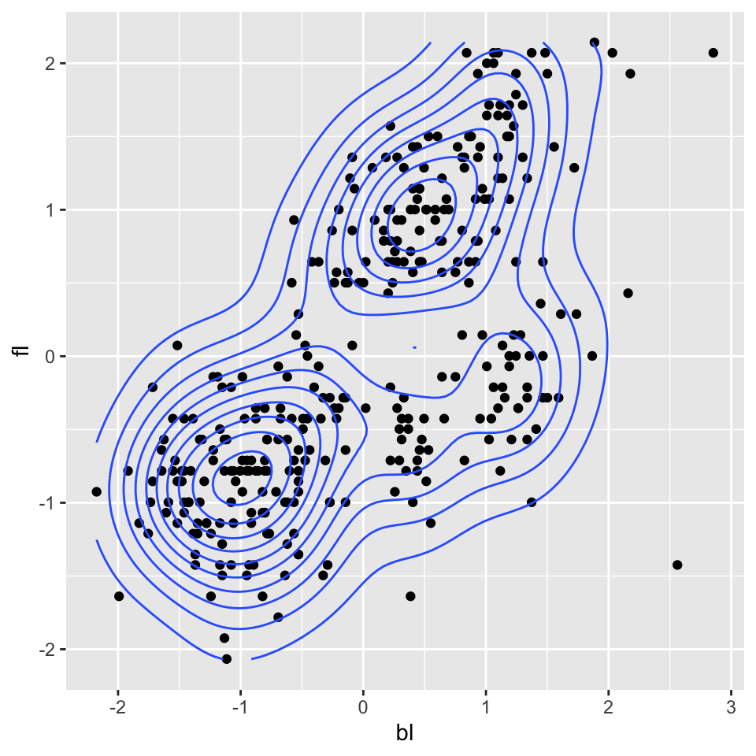
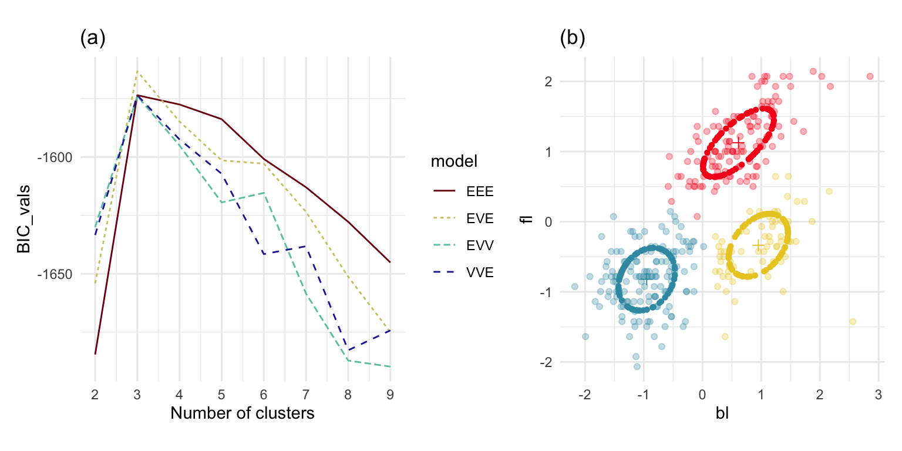
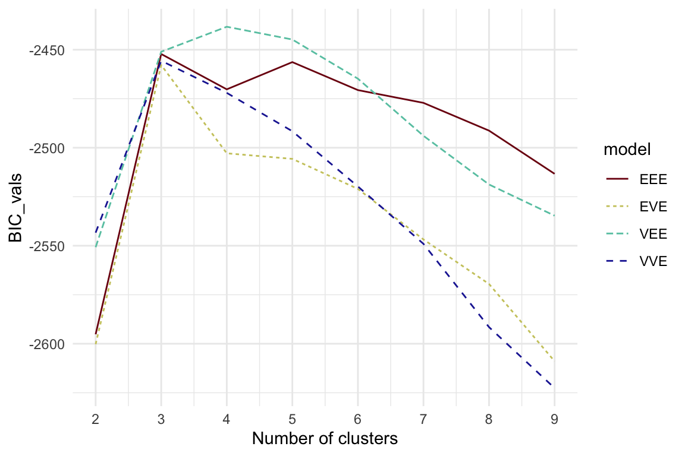

Code
library(dplyr)
library(kableExtra)
library(ggplot2)
library(mclust)
library(mulgar)
library(patchwork)
library(colorspace)
library(tourr)Model-based clustering Fraley and Raftery (2002) fits a multivariate normal mixture model to the data. It uses the EM algorithm to fit the parameters for the mean, variance–covariance of each population, and the mixing proportion. The variance-covariance matrix is re-parametrized using an eigen-decomposition
\[ \Sigma_k = \lambda_kD_kA_kD_k', ~~~k=1, \dots, g ~~\mbox{(number of clusters)} \]
resulting in several model choices, ranging from simple to complex, as shown in Table 8.1.
library(dplyr)
library(kableExtra)
library(ggplot2)
library(mclust)
library(mulgar)
library(patchwork)
library(colorspace)
library(tourr)| Model | Sigma | Family | Volume | Shape | Orientation |
|---|---|---|---|---|---|
| EII | $$\lambda I$$ | Spherical | Equal | Equal | NA |
| VII | $$\lambda_k I$$ | Spherical | Variable | Equal | NA |
| EEI | $$\lambda A$$ | Diagonal | Equal | Equal | Coordinate axes |
| VEI | $$\lambda_kA$$ | Diagonal | Variable | Equal | Coordinate axes |
| EVI | $$\lambda A_k$$ | Diagonal | Equal | Variable | Coordinate axes |
| VVI | $$\lambda_k A_k$$ | Diagonal | Variable | Variable | Coordinate axes |
| EEE | $$\lambda DAD^T$$ | Diagonal | Equal | Equal | Equal |
| EVE | $$\lambda DA_kD^T$$ | Ellipsoidal | Equal | Variable | Equal |
| VEE | $$\lambda_k DAD^T$$ | Ellipsoidal | Variable | Equal | Equal |
| VVE | $$\lambda_k DA_kD^T$$ | Ellipsoidal | Variable | Equal | Equal |
| EEV | $$\lambda D_kAD_k^T$$ | Ellipsoidal | Equal | Variable | Variable |
| VEV | $$\lambda_k D_kAD_k^T$$ | Ellipsoidal | Variable | Variable | Variable |
| EVV | $$\lambda D_kA_kD_k^T$$ | Ellipsoidal | Equal | Variable | Variable |
| VVV | $$\lambda_k D_kA_kD_k^T$$ | Ellipsoidal | Variable | Variable | Variable |
Note the distribution descriptions “spherical” and “ellipsoidal”. These are descriptions of the shape of the variance-covariance for a multivariate normal distribution. A standard multivariate normal distribution has a variance-covariance matrix with zeros in the off-diagonal elements, which corresponds to spherically shaped data. When the variances (diagonals) are different or the variables are correlated, then the shape of data from a multivariate normal is ellipsoidal.
The models are typically scored using the Bayes Information Criterion (BIC), which is based on the log likelihood, number of variables, and number of mixture components. They should also be assessed using graphical methods, as we demonstrate using the data.
We start with two of the four real-valued variables (bl, fl) and the three species. The goal is to determine whether model-based methods can discover clusters that closely correspond to the three species. Based on the scatterplot in Figure 8.1 we would expect it to do well, and suggest an elliptical variance-covariance of roughly equal sizes as the model.
load("data/penguins_sub.rda")
ggplot(penguins_sub, aes(x=bl,
y=fl)) + #,
#colour=species)) +
geom_point() +
geom_density2d(colour="#3B99B1") +
theme_minimal() +
theme(aspect.ratio = 1)
penguins_BIC <- mclustBIC(penguins_sub[,c(1,3)])
ggmc <- ggmcbic(penguins_BIC, cl=2:9, top=4) +
scale_color_discrete_divergingx(palette = "Roma") +
ggtitle("(a)") +
theme_minimal()
penguins_mc <- Mclust(penguins_sub[,c(1,3)],
G=3,
modelNames = "EVE")
penguins_mce <- mc_ellipse(penguins_mc)
penguins_cl <- penguins_sub[,c(1,3)]
penguins_cl$cl <- factor(penguins_mc$classification)
ggell <- ggplot() +
geom_point(data=penguins_cl, aes(x=bl, y=fl,
colour=cl),
alpha=0.3) +
geom_point(data=penguins_mce$ell, aes(x=bl, y=fl,
colour=cl),
shape=16) +
geom_point(data=penguins_mce$mn, aes(x=bl, y=fl,
colour=cl),
shape=3, size=2) +
scale_color_discrete_divergingx(palette = "Zissou 1") +
theme_minimal() +
theme(aspect.ratio=1, legend.position="none") +
ggtitle("(b)")
ggmc + ggell + plot_layout(ncol=2)
Figure 8.2 summarises the results. All models agree that three clusters is the best. The different variance-covariance models for three clusters have similar BIC values with EVE (different shape, same volume and orientation) being slightly higher. These plots are made from the mclust package output using the ggmcbic and mc_ellipse functions fro the mulgar package.
Now we will examine how model-based clustering will group the penguins data using all four variables.
penguins_BIC <- mclustBIC(penguins_sub[,1:4])
ggmc <- ggmcbic(penguins_BIC, cl=2:9, top=7) +
scale_color_discrete_divergingx(palette = "Roma") +
theme_minimal()
ggmc
penguins_mc <- Mclust(penguins_sub[,1:4],
G=4,
modelNames = "VEE")
penguins_mce <- mc_ellipse(penguins_mc)
penguins_cl <- penguins_sub
penguins_cl$cl <- factor(penguins_mc$classification)
penguins_mc_data <- penguins_cl %>%
select(bl:bm, cl) %>%
mutate(type = "data") %>%
bind_rows(bind_cols(penguins_mce$ell,
type=rep("ellipse",
nrow(penguins_mce$ell)))) %>%
mutate(type = factor(type))
animate_xy(penguins_mc_data[,1:4],
col=penguins_mc_data$cl,
pch=c(4, 20 )[as.numeric(penguins_mc_data$type)],
axes="off")
#
load("data/penguins_tour_path.rda")
render_gif(penguins_mc_data[,1:4],
planned_tour(pt1),
display_xy(col=penguins_mc_data$cl,
pch=c(4, 20)[
as.numeric(penguins_mc_data$type)],
axes="off",
half_range = 0.7),
gif_file="gifs/penguins_best_mc.gif",
frames=500,
loop=FALSE)penguins_mc <- Mclust(penguins_sub[,1:4],
G=3,
modelNames = "EEE")
penguins_mce <- mc_ellipse(penguins_mc)
penguins_cl <- penguins_sub
penguins_cl$cl <- factor(penguins_mc$classification)
penguins_mc_data <- penguins_cl %>%
select(bl:bm, cl) %>%
mutate(type = "data") %>%
bind_rows(bind_cols(penguins_mce$ell,
type=rep("ellipse",
nrow(penguins_mce$ell)))) %>%
mutate(type = factor(type))
animate_xy(penguins_mc_data[,1:4],
col=penguins_mc_data$cl,
pch=c(4, 20)[as.numeric(penguins_mc_data$type)],
axes="off")
# Save the animated gif
load("data/penguins_tour_path.rda")
render_gif(penguins_mc_data[,1:4],
planned_tour(pt1),
display_xy(col=penguins_mc_data$cl,
pch=c(4, 20)[
as.numeric(penguins_mc_data$type)],
axes="off",
half_range = 0.7),
gif_file="gifs/penguins_simpler_mc.gif",
frames=500,
loop=FALSE)

Visualising the final choices of models with similarly high BIC values helps to choose which best fits the data. It may not be the one with the highest value.
clusters. Does it suggest the data has three clusters? Using the tour examine the best model model. How well does this fit the data?multicluster. Does it suggest the data has six clusters? Using the tour examine the best model model. How well does this fit the data?fake_trees data. Does it suggest that the data has 10 clusters? If not, why do you think this is? Using the tour examine the best model model. How well does this fit the branching structure?aflw data? What is the best model? Is the solution related to offensive vs defensive vs mid-fielder skills?